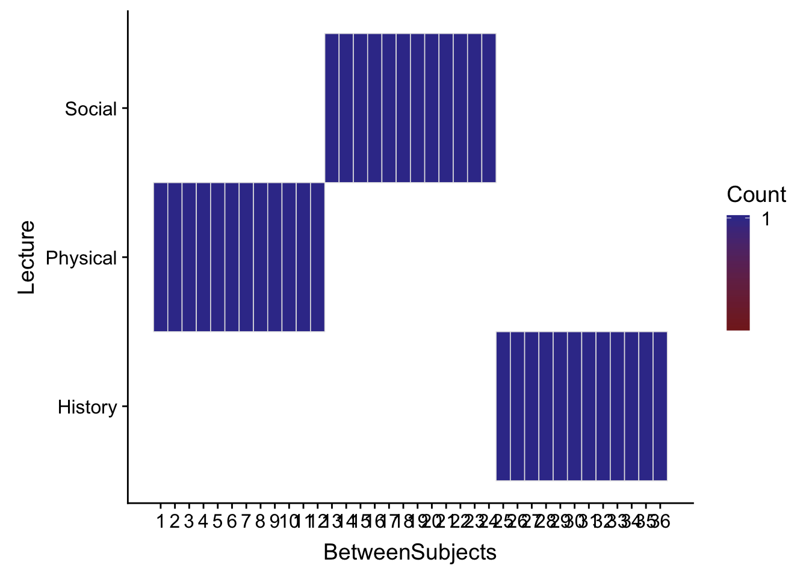
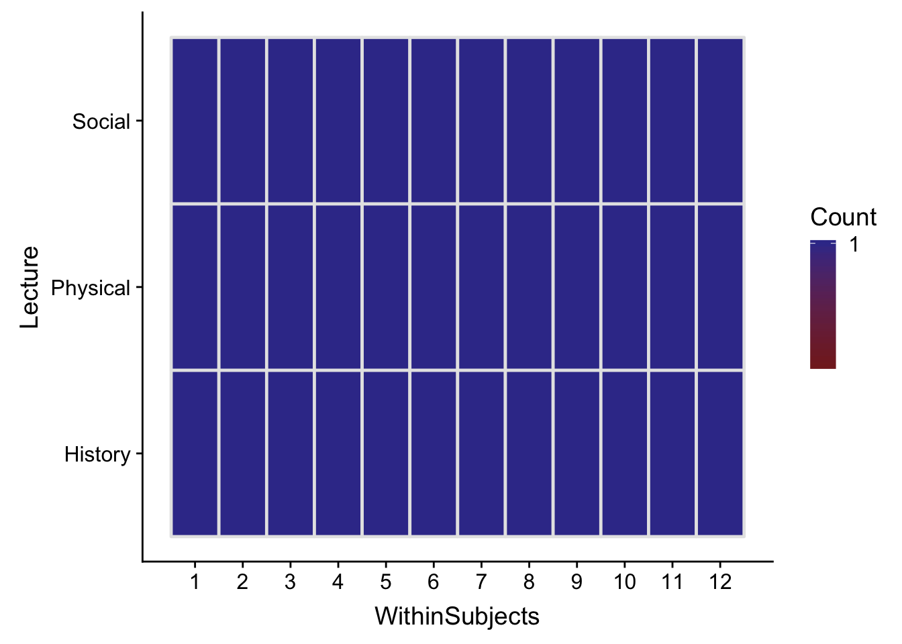
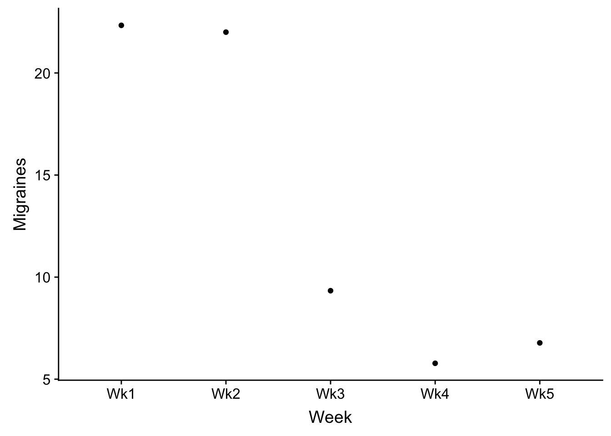
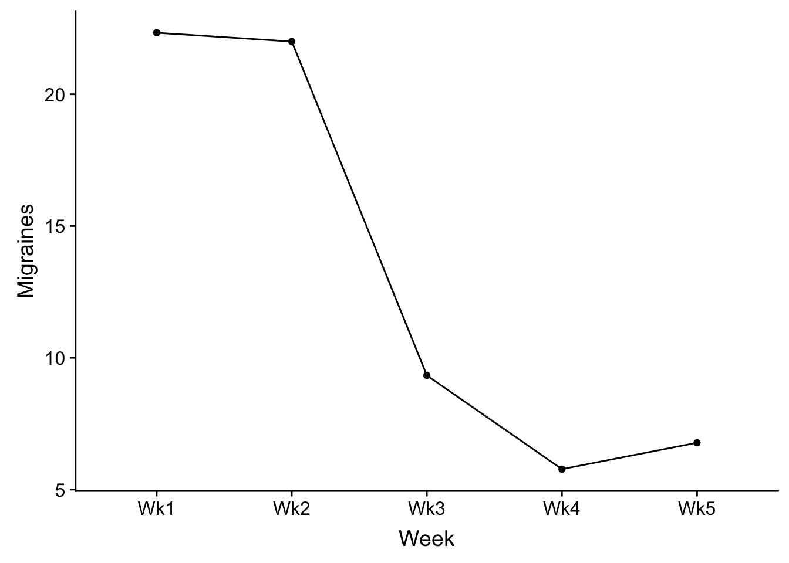
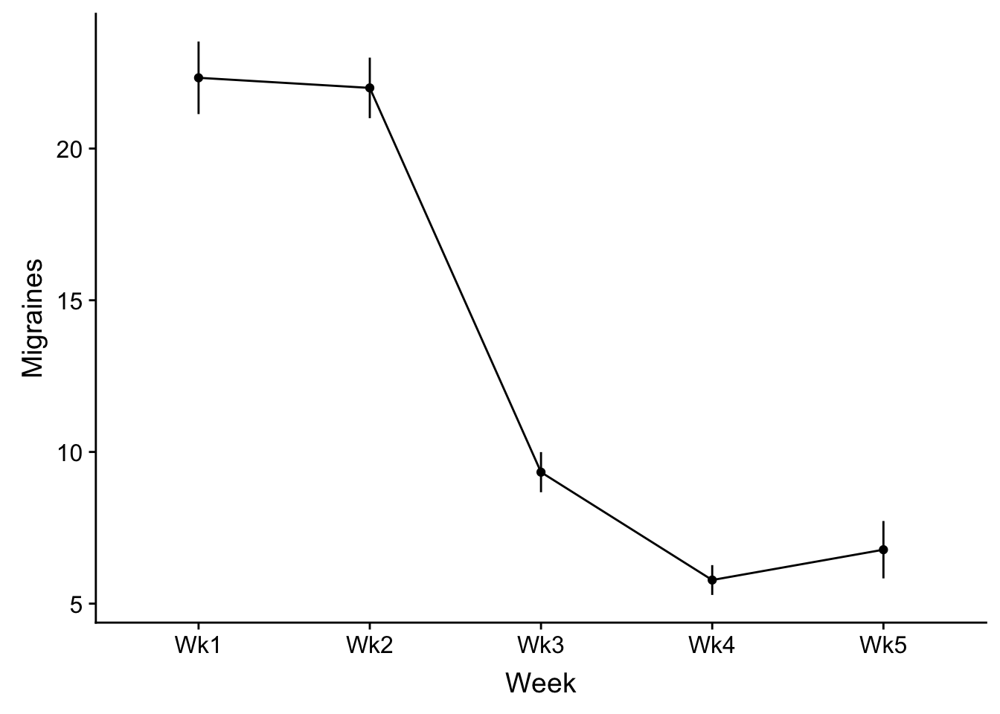
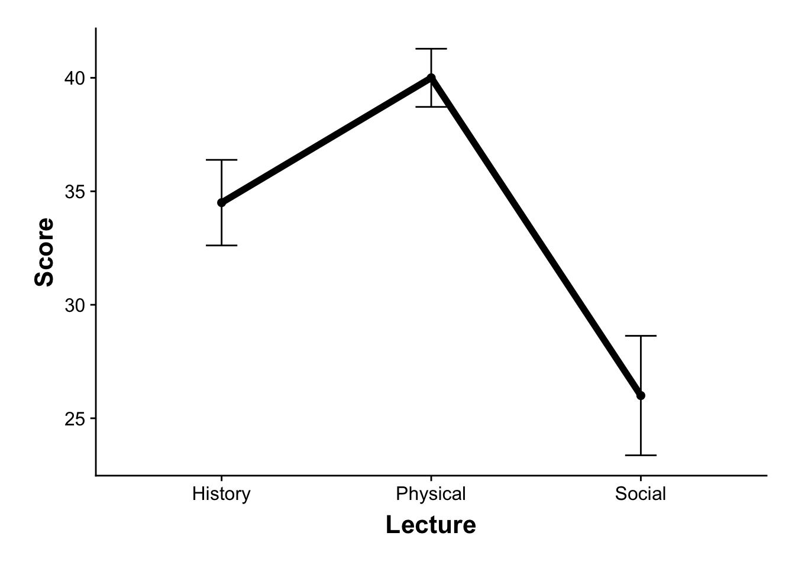
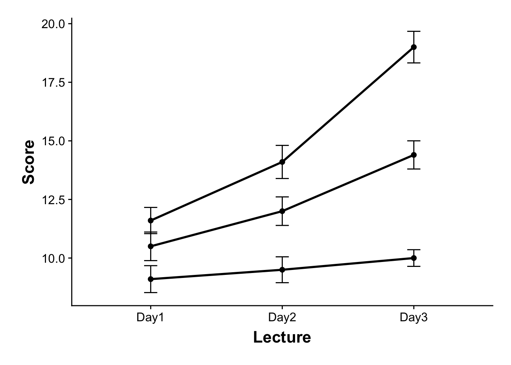

Week 13 ANOVA6: Within-Subjects
13.1 Within-Subject v. Between Subjects
Up until now we have considered ANOVA in between subjects designs. Data at each level of each factor comes from a different set of participants. This week we more onto within-subjects designs. As we mentioned in class we have a within-subject design whenever data from the same participants exists on at least two levels of a factor (or analogously occupied at least two cells within our interaction matrix).
To contrast some important distinctions let’s revisit our familiar data set contrasting test outcomes for students as a function of Lecture. I realize before, Lecture was crossed with at least one other factor, but for the sake on simplicity let’s just consider data from this single factor. The goal of this first section is to contrast results as a function whether this data is considered within-subjects or between-subjects.
within_between <- read_delim("https://raw.githubusercontent.com/tehrandavis/statsRepo/master/statsData/withinVbetween.txt",
delim = "\t")## Parsed with column specification:
## cols(
## WithinSubjects = col_integer(),
## Lecture = col_character(),
## Score = col_integer(),
## BetweenSubjects = col_integer()
## )within_between## # A tibble: 36 x 4
## WithinSubjects Lecture Score BetweenSubjects
## <int> <chr> <int> <int>
## 1 1 Physical 53 1
## 2 2 Physical 49 2
## 3 3 Physical 47 3
## 4 4 Physical 42 4
## 5 5 Physical 51 5
## 6 6 Physical 34 6
## 7 7 Physical 44 7
## 8 8 Physical 48 8
## 9 9 Physical 35 9
## 10 10 Physical 18 10
## # ... with 26 more rows13.1.1 Within v Between ANOVA
So we have our dataset within_between. You’ll note that there are two subjects columns WithinSubjects which imagines 12 participants each going through all 3 Lecture types and BetweenSubjects where each participant (N=36) is assigned to a single Lecture type. Previously, we might have treated this as a between subjects design. Looking at the ezDeign of this design we see that every BetweenSubject is assigned to a single condition (as evidenced by count = 1)
ez::ezDesign(within_between, y = Lecture, x = BetweenSubjects)
Skipping past the preliminaries (e.g., testing for assumptions) and straight to running the BS ANOVA:
between.aov <- afex::aov_ez(id = "BetweenSubjects", dv = "Score", data = within_between,
between = "Lecture", type = 3, return = "afex_aov", anova_table = list(es = "pes"))## Converting to factor: Lecture## Contrasts set to contr.sum for the following variables: Lecturebetween.aov$anova_table## Anova Table (Type 3 tests)
##
## Response: Score
## num Df den Df MSE F pes Pr(>F)
## Lecture 2 33 139.36 4.2838 0.20611 0.02218 *
## ---
## Signif. codes: 0 '***' 0.001 '**' 0.01 '*' 0.05 '.' 0.1 ' ' 1However, let’s assume instead that this data set comes a within design. That is, instead of different participants in each Lecture group, the same group of people went through all three lectures:
ez::ezDesign(within_between, y = Lecture, x = WithinSubjects)
We see that the ezDesign has changed. Instead of 36 participants each individually assigned to a single condition, we have 12 participants each assigned to all three conditions for a single trial (measure). Running the within-subjects ANOVA:
## Anova Table (Type 3 tests)
##
## Response: Score
## num Df den Df MSE F pes Pr(>F)
## Lecture 2 22 48.515 12.305 0.52801 0.000259 ***
## ---
## Signif. codes: 0 '***' 0.001 '**' 0.01 '*' 0.05 '.' 0.1 ' ' 1(You may have noticed I’ve added a correction argument to my aov_ez call. More on this later)
In both of these cases the data is exactly the same. What has changed is how we parse the variance (you’ll notice that the denominator degrees of freedom are different for the second ANOVA). In a within design, we need to take into account the “within-subject” variance. That is how individual subjects vary from one level of treatment to the other. In this respect, within designs are typically more powerful than analogous between designs. Whilet the inherent differences between individual subjects is present in both types of designs, your within-subjects ANOVA model includes it in its analysis. This increase in power is reflected by the lower MSE (48.52 v. 139.36) and subsequently, larger F-value (12.31 v. 4.28) and effect size (0.53 v. 0.21) in our within-subjects analysis.
Well if that’s the case why not run within-subject (WS) designs all of the time. Well, typically psychologists do when the phenomena lends itself to WS-designs. BUT there are certainly times when they are not practical, for example if you are concerned about learning, practice, or carryover effects where exposure to a treatment on one level might impact the other levels. For example if you were studying radiation poisoning and had a placebo v. radiation dose condition, it be likely that you wouldn’t run your experiement as a within—or at the very least you wouldn’t give them the radiation first. It would also be likely that you’d be in violation several standards of ethics.
Perhaps a little more inside baseball, there are underlying questions on whether or not we are indeed making the appropriate corrections in our WS models or correctly specifying our experiments units. For example, if participants data is collected over 4 (or any number) trials in each treactment condition, then both SPSS and R afex require you to collapse those trials to means, therefore turning what are truly 4 observations into 1 see Max et al., 1999 for details. In R, afex handles this automatically for data in long format. In SPSS you need to organize your data in another program (like Excel), calculate the means, and then send that data to SPSS.
At the same time there are debates as to the importance of sphericity in the subjects data. One alternative method that avoids these issues is to invoke mixed models (e.g., lmer). However, if you really want to go down the rabbit hole check out Doug Bates reponse on appropriate dfs and p.values in lmer. You’ll not that these discussions were ten years ago and are still being debated (see here.
For now, we won’t go down the rabbit hole and just focus on the practical issues confronted when running a repeated-measures ANOVA.
13.2 EXAMPLE 1
To start, we will use data from Howell’s example in the opening of Chapter 14. Here are data related to the effectiveness of relaxation therapy to the number of episodes that chronic migraine sufferers reported. Data was collected from each subject over the course of 5 weeks. After week 2 the therapy treatment was implemented effectively dividing the 5 weeks into two phases, Pre (Weeks 1 & 2) and Post (Weeks 3,4, & 5).
The data that you see here represent a single observation per participant per week, so with this example there is no need to collapse multiple observations to a mean value per participant per week. We’ll confront an example where this is an issue later in the vignette.
13.2.1 loading in the data:
example1 <- read_delim("https://www.uvm.edu/~dhowell/methods8/DataFiles/Tab14-3.dat",
delim = "\t")## Parsed with column specification:
## cols(
## Subject = col_integer(),
## Wk1 = col_integer(),
## Wk2 = col_integer(),
## Wk3 = col_integer(),
## Wk4 = col_integer(),
## Wk5 = col_integer()
## )You’ll notice that the data set above is in wide format. Each subject is on a single row and each week is in its own column. Note that this is the preferred format for within subjects analysis for SPSS. However in R we want it in long format.
example1_long <- gather(example1, key = "Week", value = "Migraines", 2:6)
example1_long$Week <- as.factor(example1_long$Week)
example1_long## # A tibble: 45 x 3
## Subject Week Migraines
## <int> <fct> <int>
## 1 1 Wk1 21
## 2 2 Wk1 20
## 3 3 Wk1 17
## 4 4 Wk1 25
## 5 5 Wk1 30
## 6 6 Wk1 19
## 7 7 Wk1 26
## 8 8 Wk1 17
## 9 9 Wk1 26
## 10 1 Wk2 22
## # ... with 35 more rowsOk, much better, each Subject × Week observation is on a single row.
13.2.2 plotting the data
One additional concern that we must deal with when plotting within-subjects data is the error bars. Plotting the standard error or regular confidence intervals may be misleading for making statistical inferences. This is beause the values, normally caluculated do not account for within subject correlation. Luckily for us there is a correction that we can make using the Rmisc package. Please see Cousineau (2005) and Morey (2008) for details on this issue and subsequent correction.
The practical steps for this correction include first norming the data to account for within subjects correlations.
normedData <- Rmisc::normDataWithin(data = example1_long, measurevar = "Migraines",
idvar = "Subject", betweenvars = NULL)
normedData## Subject Week Migraines MigrainesNormed
## 1 1 Wk1 21 21.644444
## 2 1 Wk4 6 6.644444
## 3 1 Wk5 6 6.644444
## 4 1 Wk3 8 8.644444
## 5 1 Wk2 22 22.644444
## 6 2 Wk5 4 5.844444
## 7 2 Wk4 4 5.844444
## 8 2 Wk2 19 20.844444
## 9 2 Wk3 10 11.844444
## 10 2 Wk1 20 21.844444
## 11 3 Wk5 5 9.044444
## 12 3 Wk2 15 19.044444
## 13 3 Wk4 4 8.044444
## 14 3 Wk3 5 9.044444
## 15 3 Wk1 17 21.044444
## 16 4 Wk4 12 5.844444
## 17 4 Wk5 17 10.844444
## 18 4 Wk3 13 6.844444
## 19 4 Wk2 30 23.844444
## 20 4 Wk1 25 18.844444
## 21 5 Wk4 8 4.444444
## 22 5 Wk1 30 26.444444
## 23 5 Wk3 13 9.444444
## 24 5 Wk5 6 2.444444
## 25 5 Wk2 27 23.444444
## 26 6 Wk5 4 4.244444
## 27 6 Wk4 7 7.244444
## 28 6 Wk3 8 8.244444
## 29 6 Wk1 19 19.244444
## 30 6 Wk2 27 27.244444
## 31 7 Wk5 5 7.444444
## 32 7 Wk3 5 7.444444
## 33 7 Wk2 16 18.444444
## 34 7 Wk4 2 4.444444
## 35 7 Wk1 26 28.444444
## 36 8 Wk5 5 8.444444
## 37 8 Wk3 8 11.444444
## 38 8 Wk4 1 4.444444
## 39 8 Wk2 18 21.444444
## 40 8 Wk1 17 20.444444
## 41 9 Wk4 8 5.044444
## 42 9 Wk3 14 11.044444
## 43 9 Wk1 26 23.044444
## 44 9 Wk2 24 21.044444
## 45 9 Wk5 9 6.044444We then calculate the se, sd, and ci values of our normed data, in this case MigrainesNormed.
The final step is to make a correction on these Normed values (Morey (2008)). This is done by taking the number of levels of the within factor (nWithinGroups) and applying the following correction:
# get the number of levels in Week:
nWithinGroups <- nlevels(example1_long$Week)
# apply the correction factor:
correctionFactor <- sqrt(nWithinGroups/(nWithinGroups - 1))The range of our corrected errorbars are the sd, se, ci multiplied by this correctionFactor.
For example, the sd of participants’ Migraines in Wk1 is:
sd(normedData$MigrainesNormed[normedData$Week == "Wk1"]) * correctionFactor## [1] 3.588369Fortunately there is a function in Rmisc that handles this correction for us, summarySEwithin. It is very similar to the summarySE function you are familiar with, but asks you to specify which IVs are within-subjects (withinvars), between-subjects(betweenvars) and which column contains subject IDs idvar. Using our original example1_long data:
Rmisc::summarySEwithin(data = example1_long, measurevar = "Migraines", withinvars = "Week",
betweenvars = NULL, idvar = "Subject")## Week N Migraines sd se ci
## 1 Wk1 9 22.333333 3.588369 1.1961229 2.758264
## 2 Wk2 9 22.000000 2.993280 0.9977598 2.300838
## 3 Wk3 9 9.333333 1.984663 0.6615545 1.525547
## 4 Wk4 9 5.777778 1.474788 0.4915960 1.133623
## 5 Wk5 9 6.777778 2.837252 0.9457507 2.180905Unfortunately, to date I haven’t found a way to get this to play nice with stat_summary() in ggplot(). HOWEVER, there is a simple work around. Since stat_summary() is simply summarizing our means and error values from the dataset and summarySEwithin is doing the exact same thing, we can simply pull these values straight from summarySEwithin with one MAJOR caveat. summarySEwithin reports the normed means, however for plotting we need the original means. Note that this is not an issue when you are only dealing with within subjects factors, but if you are performing mixed ANOVA (combination within-subjects and between-subjects) these means can differ.
To address this problem user Hause Lin created a custom function summarySEwithin2 that reports both normed and unnormed means. You can find this script on their Github site here. I would recommend copying and pasting the code you your own “.R” file for future use. In the meantime we can directly source this code from their site:
source("https://gist.githubusercontent.com/hauselin/a83b6d2f05b0c90c0428017455f73744/raw/38e03ea4bf658d913cf11f4f1c18a1c328265a71/summarySEwithin2.R")A similar script may be found on this ggplot tutorial site, which forms the basis of this alternative plotting method.
Note that this “alternative” is how I in fact create most of my own ANOVA plots.
First we save the output of summarySEwithin2 to an object:
summaryData <- summarySEwithin2(data = example1_long, measurevar = "Migraines", withinvars = "Week",
idvar = "Subject")
summaryData## Week N Migraines MigrainesNormed sd se ci
## 1 Wk1 9 22.333333 22.333333 3.588369 1.1961229 2.758264
## 2 Wk2 9 22.000000 22.000000 2.993280 0.9977598 2.300838
## 3 Wk3 9 9.333333 9.333333 1.984663 0.6615545 1.525547
## 4 Wk4 9 5.777778 5.777778 1.474788 0.4915960 1.133623
## 5 Wk5 9 6.777778 6.777778 2.837252 0.9457507 2.180905From here we can refer directly to summaryData in constructing the ggplot:
p <- ggplot(summaryData, mapping = aes(x = Week, y = Migraines, group = 1))And now to construct the plot. rather than using summary_stat() we directly call each geom. For example, adding the means and as points:
p <- p + geom_point()
p
Connecting those points with lines:
p <- p + geom_line()
p
Adding error bars (SE):
p <- p + geom_errorbar(aes(ymin = Migraines - se, ymax = Migraines + se), width = 0)
p
(note that above I set width of the error bars to 0 to keep consistent with how we’ve been plotting pointranges). However, if you want caps, you can change the width. I recommend a width no higher than 0.2.
From here you can use your familiar commands to whip it into APA format!
13.2.3 running a within ANOVA (afex):
Running a WS ANOVA is just like running a BS ANOVA in afex. We call in our within subjects factors using the within= argument.
within.aov <- afex::aov_ez(id = "Subject", dv = "Migraines", data = example1_long,
between = NULL, within = "Week", type = 3, return = "afex_aov", anova_table = list(es = "pes"))
within.aov$anova_table## Anova Table (Type 3 tests)
##
## Response: Migraines
## num Df den Df MSE F pes Pr(>F)
## Week 2.7378 21.903 10.519 85.042 0.91402 5.773e-12 ***
## ---
## Signif. codes: 0 '***' 0.001 '**' 0.01 '*' 0.05 '.' 0.1 ' ' 1You’ll also notice in the code above that I’ve added a correction="none" call to my anova_table argument. Otherwise afex defaults to applying the Greenhouse-Geisser correction link. There is an argument to be made that you should always make a correction to guard against deviations from sphericity. The correction becomes larger the further your data is from sphericity. However, standard practice in the psychology literature is to only apply the correction if our data fail Mauchly’s Test link. The outcome of this test can be obtained by using the summary() function
summary(within.aov)## Warning in summary.Anova.mlm(object$Anova, multivariate = FALSE): HF eps >
## 1 treated as 1##
## Univariate Type III Repeated-Measures ANOVA Assuming Sphericity
##
## Sum Sq num Df Error SS den Df F value Pr(>F)
## (Intercept) 7893.7 1 486.71 8 129.747 3.186e-06 ***
## Week 2449.2 4 230.40 32 85.042 < 2.2e-16 ***
## ---
## Signif. codes: 0 '***' 0.001 '**' 0.01 '*' 0.05 '.' 0.1 ' ' 1
##
##
## Mauchly Tests for Sphericity
##
## Test statistic p-value
## Week 0.28236 0.53699
##
##
## Greenhouse-Geisser and Huynh-Feldt Corrections
## for Departure from Sphericity
##
## GG eps Pr(>F[GG])
## Week 0.68446 5.773e-12 ***
## ---
## Signif. codes: 0 '***' 0.001 '**' 0.01 '*' 0.05 '.' 0.1 ' ' 1
##
## HF eps Pr(>F[HF])
## Week 1.075624 1.39444e-16This gives us our original ANOVA, the Mauchly Test, and the Greenhouse-Geisser and Huynh-Feldt corrections. In this case the Mauchly Test p = .54, so no corrections are necessary. If your elect to make the correction (i.e., the data fails Mauchly’s Test) then you could multiply your original degrees of freedom by the GG eps (or HF eps). The p.value next to the correction values tells you the p.value for your ANOVA effect assuming corrections. In this case even with the corrections the effect of Week is significant. Alternatively you could just rerun the afex function and specifying the correction= call.
## GG correction:
within.aov <- afex::aov_ez(id = "Subject", dv = "Migraines", data = example1_long,
between = NULL, within = "Week", type = 3, return = "afex_aov", anova_table = list(es = "pes",
correction = "GG"))
within.aov## Anova Table (Type 3 tests)
##
## Response: Migraines
## Effect df MSE F pes p.value
## 1 Week 2.74, 21.90 10.52 85.04 *** .91 <.0001
## ---
## Signif. codes: 0 '***' 0.001 '**' 0.01 '*' 0.05 '+' 0.1 ' ' 1
##
## Sphericity correction method: GG## HF correction (note that any HF eps > 1 will be treated as 1):
within.aov <- afex::aov_ez(id = "Subject", dv = "Migraines", data = example1_long,
between = NULL, within = "Week", type = 3, return = "afex_aov", anova_table = list(es = "pes",
correction = "HF"))## Warning: HF eps > 1 treated as 1within.aov## Anova Table (Type 3 tests)
##
## Response: Migraines
## Effect df MSE F pes p.value
## 1 Week 4, 32 7.20 85.04 *** .91 <.0001
## ---
## Signif. codes: 0 '***' 0.001 '**' 0.01 '*' 0.05 '+' 0.1 ' ' 1
##
## Sphericity correction method: HF13.2.4 planned contrasts
We can also perform planned contrasts. For example, in this case it make the most sense to examine differences between the pre-treatment weeks (1,2) and post-treatment weeks (3,4,5). To do this we can set up a contrast vector and and using the emmeans() function as below. You call in the within.aov, specify the custom contrast, and apply the contrast to the within factor. The resulting output gives you means data for each level as well as a t.test on the contrast.
before.v.treat <- c(-1/2, -1/2, 1/3, 1/3, 1/3)
within.aov <- afex::aov_ez(id = "Subject", dv = "Migraines", data = example1_long,
between = NULL, within = "Week", type = 3, return = "afex_aov", anova_table = list(es = "pes"))
# custom.comp = custom contrasts note that I've named the contrast
custom.comp = list(before.v.treat = c(-1/2, -1/2, 1/3, 1/3, 1/3))
# original aov, , and apply it to Week:
emmeans::emmeans(within.aov, specs = "Week") %>% contrast(., custom.comp)## contrast estimate SE df t.ratio p.value
## before.v.treat -14.87037 0.8164966 32 -18.212 <.0001``
13.3 EXAMPLE 2
Let’s take a look at another example, using a experimental paragdigm we are familiar with:
13.3.1 loading in the data
You note that this data is already in long format so no need to adjust.
example2_long <- read_delim("https://raw.githubusercontent.com/tehrandavis/statsRepo/master/statsData/ANOVA6_withinEx2.txt",
delim = "\t")## Parsed with column specification:
## cols(
## Subject = col_integer(),
## Lecture = col_character(),
## Score = col_integer()
## )example2_long## # A tibble: 36 x 3
## Subject Lecture Score
## <int> <chr> <int>
## 1 1 Physical 53
## 2 2 Physical 49
## 3 3 Physical 47
## 4 4 Physical 42
## 5 5 Physical 51
## 6 6 Physical 34
## 7 7 Physical 44
## 8 8 Physical 48
## 9 9 Physical 35
## 10 10 Physical 18
## # ... with 26 more rows13.3.2 plotting the data
Let’s plot this data. This time, I’ll make my points a little larger, lines a little thicker, and add caps to the error bars:
summaryData <- summarySEwithin2(data = example2_long, measurevar = "Score", withinvars = "Lecture",
idvar = "Subject")## Automatically converting the following non-factors to factors: Lecturep <- ggplot(summaryData, mapping = aes(x = Lecture, y = Score, group = 1)) + geom_point(size = 2) +
geom_line(size = 2) + geom_errorbar(aes(ymin = Score - se, ymax = Score + se),
width = 0.15) + theme_cowplot() + theme(axis.title = element_text(size = 16,
face = "bold", lineheight = 0.55), axis.text = element_text(size = 12), legend.title = element_text(size = 12,
face = "bold"), legend.position = c(0.25, 0.25)) + scale_color_manual(values = c("black",
"grey50")) + xlab("Lecture") + ylab("Score") + theme(plot.margin = unit(c(0.25,
0.25, 0.25, 0.25), "in")) +
# stack legend boxes horizontally:
theme(legend.box = "horizontal")
show(p)
Maybe not the best plot, but wanted to show you how to tweak things.
13.3.3 running the ANOVA:
As before, let’s run this using afex:
within.aov <- afex::aov_ez(id = "Subject", dv = "Score", data = example2_long, between = NULL,
within = "Lecture", type = 3, return = "afex_aov", anova_table = list(es = "pes",
correction = "none"))
summary(within.aov)##
## Univariate Type III Repeated-Measures ANOVA Assuming Sphericity
##
## Sum Sq num Df Error SS den Df F value Pr(>F)
## (Intercept) 40401 1 3531.7 11 125.836 2.319e-07 ***
## Lecture 1194 2 1067.3 22 12.305 0.000259 ***
## ---
## Signif. codes: 0 '***' 0.001 '**' 0.01 '*' 0.05 '.' 0.1 ' ' 1
##
##
## Mauchly Tests for Sphericity
##
## Test statistic p-value
## Lecture 0.41524 0.012345
##
##
## Greenhouse-Geisser and Huynh-Feldt Corrections
## for Departure from Sphericity
##
## GG eps Pr(>F[GG])
## Lecture 0.63101 0.00225 **
## ---
## Signif. codes: 0 '***' 0.001 '**' 0.01 '*' 0.05 '.' 0.1 ' ' 1
##
## HF eps Pr(>F[HF])
## Lecture 0.6748954 0.00173583You’ll notice that in this example the data failed Mauchly Tests for Sphericity. As I mentioned above in this case you’ll need to make the appropriate corrections. GG corrections are the “industry standard” (that is, I typically see these). HF corrections are not as conservative, and are appropriate in instances where the GG eps > 0.75. In this case we’ll use the GG correction. My advice, just rerun the ANOVA with correction="GG":
within.aov <- afex::aov_ez(id = "Subject", dv = "Score", data = example2_long, between = NULL,
within = "Lecture", type = 3, return = "afex_aov", anova_table = list(es = "pes",
correction = "GG", sig_symbols = rep("", 4)))
within.aov$anova_table## Anova Table (Type 3 tests)
##
## Response: Score
## num Df den Df MSE F pes Pr(>F)
## Lecture 1.262 13.882 76.885 12.305 0.52801 0.00225 **
## ---
## Signif. codes: 0 '***' 0.001 '**' 0.01 '*' 0.05 '.' 0.1 ' ' 113.3.4 post-hocs
Post-hoc comparisons of means take a different form for repeated measures ANOVA. Typical methods such as Tukey HSD were designed for between-subjects effects, where it makes sense (assuming homogeneity of variance) to use a pooled error term. However, for within-subjects (or repeated measures) effects, the error term is the Treatment x Subjects interaction, and the nature of the TxS interaction across all treatment levels can be very different than it is for any particular pair of treatment levels. So the usual recommendation for carrying out pair-wise contrasts for a within-subjects factor is to use ordinary paired t-tests with an error term based only on the levels being compared.
This can be most simply accomplished by running a seperate ANOVA for each comparison (this guarantees use of the appropriate error terms), dropping any unused levels from the analysis. For example, comparing Physical v. Social:
physical_v_social <- filter(example2_long, Lecture != "History")
afex::aov_ez(id = "Subject", dv = "Score", data = physical_v_social, between = NULL,
within = "Lecture", type = 3, return = "afex_aov", anova_table = list(es = "pes",
correction = "none"))## Anova Table (Type 3 tests)
##
## Response: Score
## Effect df MSE F pes p.value
## 1 Lecture 1, 11 54.36 21.63 *** .66 .0007
## ---
## Signif. codes: 0 '***' 0.001 '**' 0.01 '*' 0.05 '+' 0.1 ' ' 1Note that tis p-value is NOT adjusted. A simple way of addressing this is using a Bonferroni correction. For example, if we run the 3 possible tests for this analysis then the critical p would need to be adjusted to .05/3, or .016. In this case I’m still good (.0007 < .016)
13.4 EXAMPLE 3
Let’s ramp-up the complexity. Here is a dataset testing Recall over three days as a function of depth of processing (Lo, Med, High). In this case we have 2 within factors.
13.4.1 loading in the data:
example3 <- read_delim("https://raw.githubusercontent.com/tehrandavis/statsRepo/master/statsData/ANOVA6_withinEx3.txt",
delim = "\t")## Parsed with column specification:
## cols(
## Subject = col_integer(),
## Recalled = col_integer(),
## ProcessDepth = col_character(),
## Day = col_character()
## )example3## # A tibble: 90 x 4
## Subject Recalled ProcessDepth Day
## <int> <int> <chr> <chr>
## 1 1 14 High Day1
## 2 2 10 High Day1
## 3 3 13 High Day1
## 4 4 14 High Day1
## 5 5 12 High Day1
## 6 6 8 High Day1
## 7 7 13 High Day1
## 8 8 11 High Day1
## 9 9 9 High Day1
## 10 10 12 High Day1
## # ... with 80 more rows13.4.2 plotting the data
Again, we need to make the appropriate correction for our error bars. In this case the number of within groups is the number of cells that is formed by crossing Day (1,2,3) and Processing Depth (Lo, Med, Hi). As this is a 3 * 3 design there are 9 cells, or nWithinGroups=9. As before this is handled auto-magically in summarySEwithin2
summaryData <- summarySEwithin2(data = example3_long, measurevar = "Recalled", withinvars = c("Day",
"ProcessDepth"), idvar = "Subject")
p <- ggplot(summaryData, mapping = aes(x = Day, y = Recalled, group = ProcessDepth)) +
geom_point(size = 2) + geom_line(size = 1) + geom_errorbar(aes(ymin = Recalled -
se, ymax = Recalled + se), width = 0.1) + theme_cowplot() + theme(axis.title = element_text(size = 16,
face = "bold", lineheight = 0.55), axis.text = element_text(size = 12), legend.title = element_text(size = 12,
face = "bold"), legend.position = c(0.25, 0.25)) + scale_color_manual(values = c("black",
"grey50")) + xlab("Lecture") + ylab("Score") + theme(plot.margin = unit(c(0.25,
0.25, 0.25, 0.25), "in")) +
# stack legend boxes horizontally:
theme(legend.box = "horizontal")
show(p)
13.4.3 running the omnibus ANOVA:
omnibus.aov <- afex::aov_ez(id = "Subject", dv = "Recalled", data = example3_long,
between = NULL, within = c("ProcessDepth", "Day"), type = 3, return = "afex_aov",
anova_table = list(es = "pes", correction = "none"))
summary(omnibus.aov)## Warning in summary.Anova.mlm(object$Anova, multivariate = FALSE): HF eps >
## 1 treated as 1##
## Univariate Type III Repeated-Measures ANOVA Assuming Sphericity
##
## Sum Sq num Df Error SS den Df F value Pr(>F)
## (Intercept) 13493.4 1 41.067 9 2957.153 1.209e-12 ***
## ProcessDepth 432.2 2 61.400 18 63.345 7.137e-09 ***
## Day 254.5 2 95.733 18 23.925 8.521e-06 ***
## ProcessDepth:Day 110.4 4 93.400 36 10.636 8.567e-06 ***
## ---
## Signif. codes: 0 '***' 0.001 '**' 0.01 '*' 0.05 '.' 0.1 ' ' 1
##
##
## Mauchly Tests for Sphericity
##
## Test statistic p-value
## ProcessDepth 0.94884 0.81054
## Day 0.81573 0.44277
## ProcessDepth:Day 0.22026 0.27277
##
##
## Greenhouse-Geisser and Huynh-Feldt Corrections
## for Departure from Sphericity
##
## GG eps Pr(>F[GG])
## ProcessDepth 0.95133 1.559e-08 ***
## Day 0.84440 3.539e-05 ***
## ProcessDepth:Day 0.71617 0.0001178 ***
## ---
## Signif. codes: 0 '***' 0.001 '**' 0.01 '*' 0.05 '.' 0.1 ' ' 1
##
## HF eps Pr(>F[HF])
## ProcessDepth 1.199509 7.136593e-09
## Day 1.018163 8.520701e-06
## ProcessDepth:Day 1.085791 8.566883e-06Here we have two main effects and an interaction. Let’s unpack the interaction by taking a look at whether Recall inceases over sucessive days.
13.4.4 running the simple effects ANOVAs
It’s recommended that one avoid the use of pooled error terms when performing simple effects analysis of within-subjects ANOVA. This is definitely the case when the spherecity assumption is violated, but as a general rule, even when the assumption is not technically violated, deviations from spherecity can artificially adjust Type I error. So in this case, simple follow up ANOVAs are justified.
One way to do this would be, as we have done in the past, seperate out the data and run seperate simple effects ANOVAs:
hi.data <- filter(example3_long, ProcessDepth == "High")
med.data <- filter(example3_long, ProcessDepth == "Med")
lo.data <- filter(example3_long, ProcessDepth == "Lo")
hi.aov <- afex::aov_ez(id = "Subject", dv = "Recalled", data = hi.data, between = NULL,
within = "Day", type = 3, return = "afex_aov", anova_table = list(es = "pes",
correction = "none"))
hi.aov## Anova Table (Type 3 tests)
##
## Response: Recalled
## Effect df MSE F pes p.value
## 1 Day 2, 18 4.59 30.88 *** .77 <.0001
## ---
## Signif. codes: 0 '***' 0.001 '**' 0.01 '*' 0.05 '+' 0.1 ' ' 1med.aov <- afex::aov_ez(id = "Subject", dv = "Recalled", data = med.data, between = NULL,
within = "Day", type = 3, return = "afex_aov", anova_table = list(es = "pes",
correction = "none"))
med.aov## Anova Table (Type 3 tests)
##
## Response: Recalled
## Effect df MSE F pes p.value
## 1 Day 2, 18 3.51 11.01 *** .55 .0008
## ---
## Signif. codes: 0 '***' 0.001 '**' 0.01 '*' 0.05 '+' 0.1 ' ' 1lo.aov <- afex::aov_ez(id = "Subject", dv = "Recalled", data = lo.data, between = NULL,
within = "Day", type = 3, return = "afex_aov", anova_table = list(es = "pes",
correction = "none"))
lo.aov## Anova Table (Type 3 tests)
##
## Response: Recalled
## Effect df MSE F pes p.value
## 1 Day 2, 18 2.40 0.85 .09 .45
## ---
## Signif. codes: 0 '***' 0.001 '**' 0.01 '*' 0.05 '+' 0.1 ' ' 1I’m only printing the ANOVA and not the tests of Sphericity here for the same of brevity, though it’s always a good idea to check those. How about you go ahead an do that right now… I’ll wait.
In this spirit of self-reliance, I also leave it to you to perform any necessary post hocs on the hi and med data. Remember however that for each post-hoc you run you need to correct your critical p-value. I imagine you’ll end up running 6 tests, so critical p needs to be .05/6
Bottom line: The simple effects ANOVAs (and subsequent post-hocs) confirm what the figure suggest; that recall increased over sucessive days in the High and Med processing conditions, but not the Low processing condition.
13.5 How to perform a within subjects analysis in SPSS:
I’ll likely but together my own vid, but it won’t be much better than this: